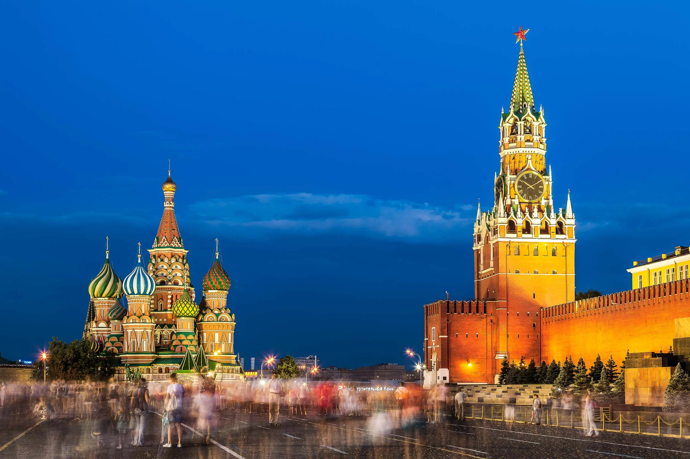
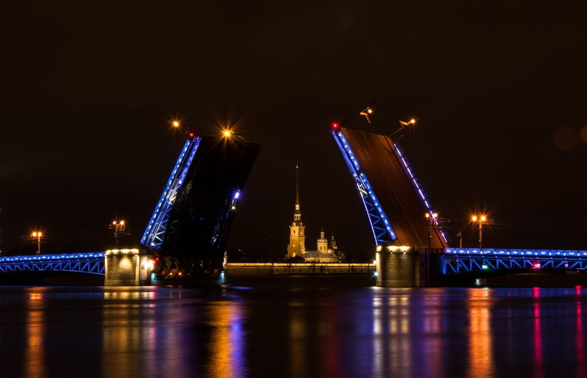
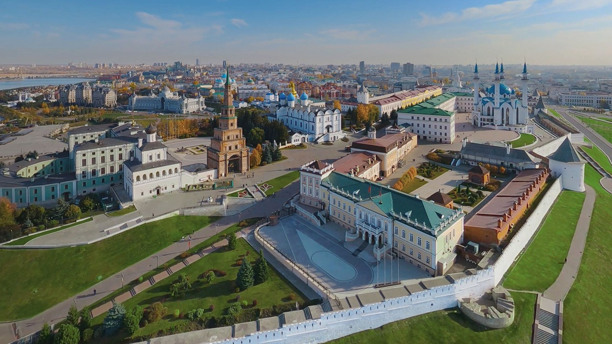

Социальная сеть и платформа волонтёрской помощи для людей с ОВЗ
Общение, группы по интересам, мероприятия и сервис подбора сопровождающих — в одном месте.
Быстрый доступ
Перейти к разделу
Популярные города
Выбор волонтеров

Москва
Активная сеть волонтёрских инициатив и центров помощи

Санкт-Петербург
Сотни мероприятий по доступности и культуре

Казань
Региональная поддержка и программы обучения волонтёров

Новосибирск
Локальные проекты сопровождения и адаптивный спорт